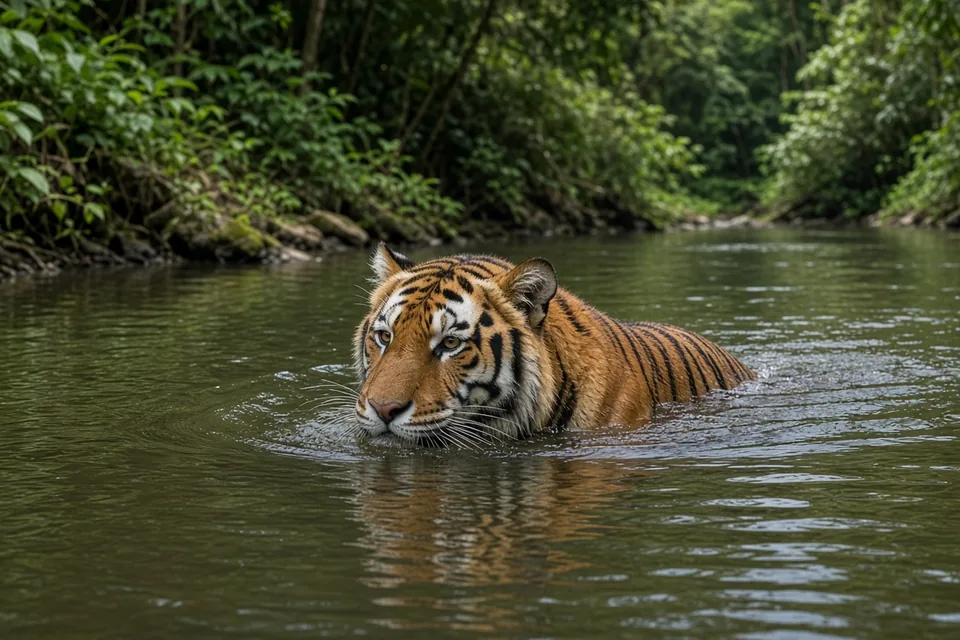
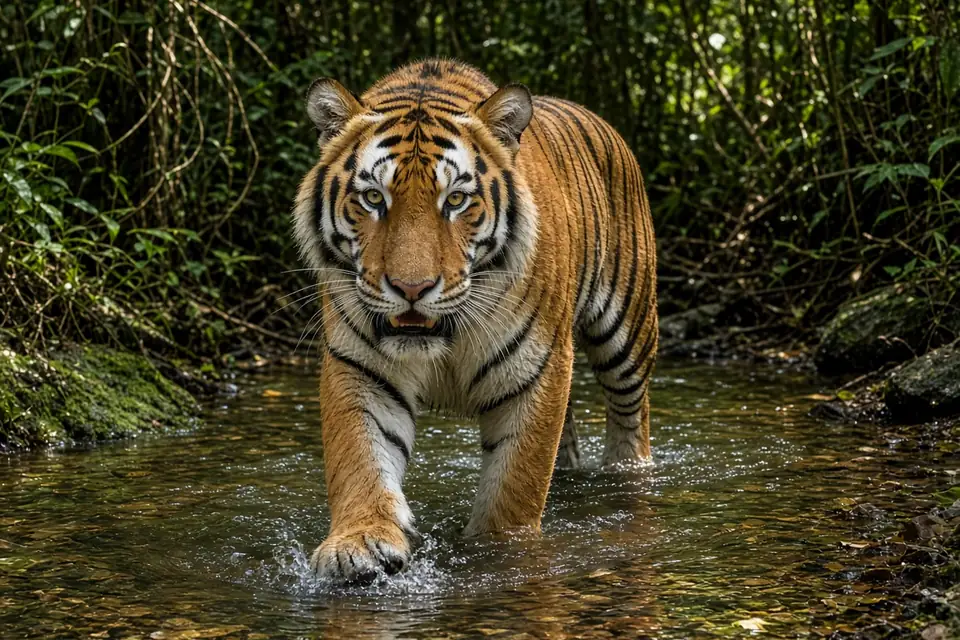

Home › Blog › Can tigers swim?
Can tigers swim? How far, and why they use water
Yes. Tigers are among the strongest swimmers of the big cats. They regularly enter rivers and pools to cool down, cross water barriers, and sometimes take prey in or beside water. Fact sheets from San Diego Zoo Wildlife Alliance and the Smithsonian's National Zoo report that tigers can cross rivers about 6 to 8 km (roughly 4 to 5 miles) wide, and they have been seen far offshore.
The short answer
Tigers swim well, and they often choose to. Unlike many smaller cats that avoid getting wet, wild tigers soak in shaded pools and streams in hot weather, swim across rivers that cut through their ranges, and in some wetland habitats use water as part of how they hunt. Our tiger facts page covers size, range and conservation; this post focuses on swimming.
How far can a tiger swim?
The San Diego Zoo Wildlife Alliance Library fact sheet on tiger behavior and ecology cites Mazak (1981) for river crossings of 6 to 8 km (about 4 to 5 miles), and Thapar (2004) for a tiger seen about 11 km (7 miles) out to sea. The Smithsonian National Zoo notes that tigers can cross rivers and lakes around 8 km (5 miles) wide. Those figures describe capable swimming over distance, not a daily commute. Most water use is shorter: a soak in a pool, a stream crossing, or a swim along a riverbank while hunting.

Why do tigers go in the water?
- Cooling. Larger subspecies often lie partly submerged in shaded pools or streams for much of a hot day (Tilson and Nyhus 2010, cited by San Diego Zoo Wildlife Alliance). Wet fur and evaporation help shed heat.
- Crossing habitat. They swim to move between parts of a home range divided by rivers, channels or flooded forest.
- Hunting. Tigers are ambush hunters that sometimes take prey near water and have been recorded hunting in water.
- Escape and refuge. During floods, tigers have climbed trees and used high ground, and swimming lets them move when land routes flood.

How tiger swimming compares with other big cats
Among the six big cats on this site, the jaguar is the clearest water specialist for diet: in some Pantanal wetlands aquatic prey dominates jaguar scats. Tigers are not as aquatic in diet as those jaguars, but they are far more willing swimmers than cheetahs or lions, which enter water far less often. Leopards can swim but more often cache kills in trees than hunt from water. See also do jaguars hunt in water?
Webbed paws and a muscular body
Tigers have partially webbed toes and powerful limbs, which help propulsion. They are heavy animals, so swimming is hard work, but their strength and buoyancy in fresh water make long crossings possible. Captive tigers often play in pools when given the chance, which matches the wild pattern of seeking water rather than avoiding it.
Key takeaways
- Yes, tigers swim, and they often seek water to cool off.
- Documented crossings include rivers about 6 to 8 km wide, with rarer sightings farther offshore.
- Water use supports cooling, travel across flooded or riverine habitat, and sometimes hunting.
- Jaguars are the more aquatic hunter by diet; tigers are the other big cat that routinely treats water as normal habitat.
Frequently asked questions
Can tigers swim?
Yes. Tigers are strong, willing swimmers. They cool off in pools and streams, cross rivers, and sometimes hunt in or beside water.
How far can a tiger swim?
San Diego Zoo Wildlife Alliance cites crossings of rivers 6 to 8 km wide, and a report of a tiger about 11 km out to sea. The Smithsonian notes crossings of about 8 km.
Do tigers like water?
In hot climates they often do. Larger subspecies commonly rest partly submerged in shaded water for much of the day.
Do tigers hunt in water?
They can. They are ambush hunters that take prey near water and have been recorded hunting in water.
Which big cat is the best swimmer?
Jaguars are the clearest water specialists for hunting aquatic prey. Tigers are the other big cat that routinely swims long distances across rivers and lakes.
Cite this page
APA: BigCatWise. (2026, November 5). Can tigers swim?. https://bigcatwise.com/blog/can-tigers-swim.html
MLA: "Can tigers swim?." BigCatWise, 5 Nov. 2026, bigcatwise.com/blog/can-tigers-swim.html.
Chicago: BigCatWise. "Can tigers swim?." Last modified November 5, 2026. https://bigcatwise.com/blog/can-tigers-swim.html.
Please check the date you accessed the page and adjust to your teacher's or journal's style guide.
Sources
- San Diego Zoo Wildlife Alliance Library: Tiger behavior and ecology
- Smithsonian's National Zoo and Conservation Biology Institute: Tiger
- San Diego Zoo Wildlife Alliance: Tiger
- IUCN SSC Cat Specialist Group: Tiger
- WWF: Tiger
Figures are rounded summaries of the sources above. Wild populations are hard to count, so estimates change as new surveys are published.